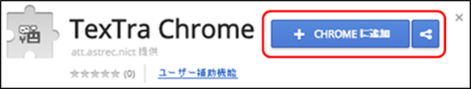
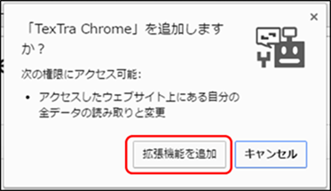
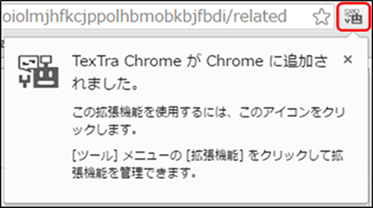
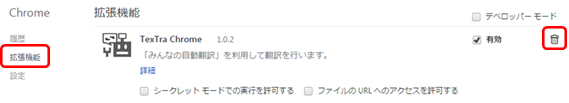

インストール
1. 下記のリンク先で「CHROMEに追加」ボタンを押してください。
ブラウザの右上に「TexTra」ボタンが追加されます。
https://chrome.google.com/webstore/detail/textra-chrome/mhnnkoiolmjhfkcjppolhbmobkbjfbdi



アンインストール
Chrome右上メニュー＞設定＞拡張機能を選択
右の拡張機能一覧からTexTraを探し、
削除ボタン（ゴミ箱ボタン）を押す。
